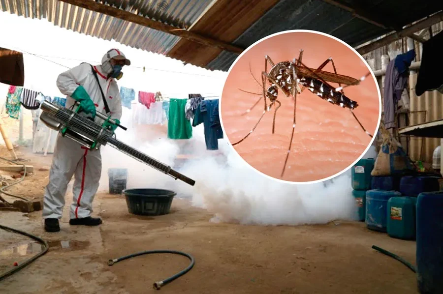

PREVENCIÓN DEL DENGUE
"HOMBRE PREVENIDO VALE POR DOS"
Sitio web informativo
¡Sin mosquitos no hay dengue!

Las instituciones de salud deben ser sitios seguros para sus pacientes, sus familiares y todo su
personal.
También deben ser el ejemplo en medidas de prevención y control de los mosquitos transmisores del dengue
y
otras arbovirosis como chikungunya y Zika.
La administración y todo el personal de las instituciones de salud deben estar comprometidos a proteger
sus
instituciones de la presencia de transmisores de las arbovirosis.
Por lo cual es necesario
asumir
la responsabilidad de:
1. Mantener limpia y sin criaderos habituales o potenciales de mosquitos, dentro y alrededor de las
instituciones.
2. Protección física con mallas milimetradas en todas las puertas y ventanas para evitar la entrada de
mosquitos adultos y utilizar mosquiteros en todo paciente infectado.
3. Promover el control de criaderos en los hogares de sus pacientes, así como la prevención de picaduras
de
mosquitos.